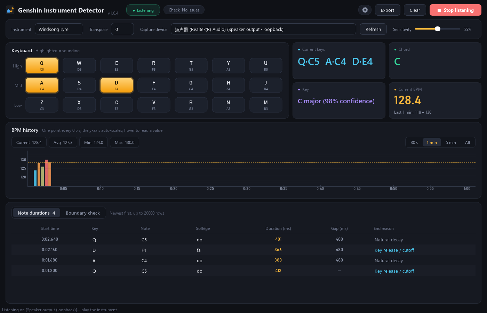
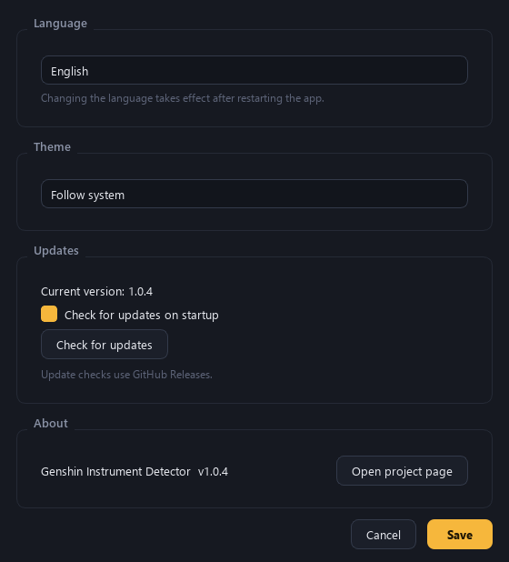
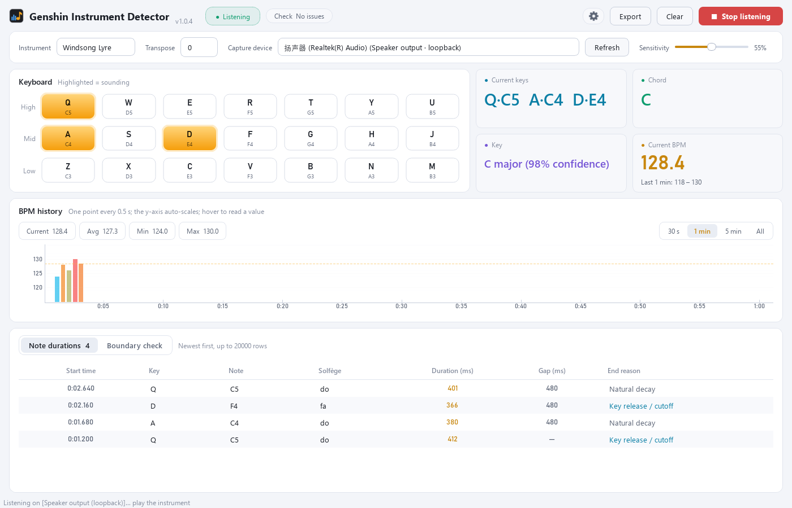
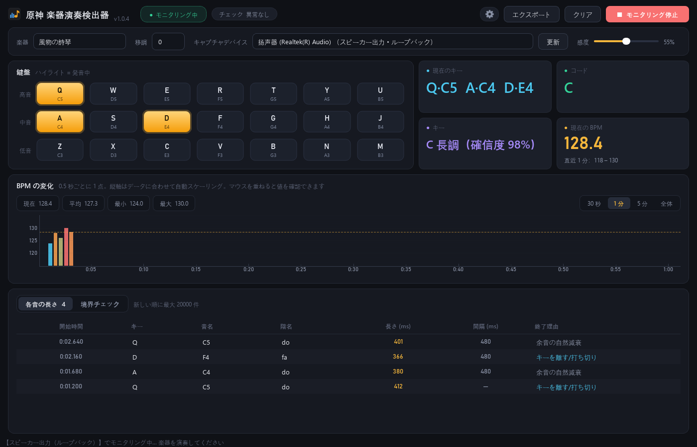

Six instruments
Windsong Lyre, Floral Zither, Vintage Lyre, Harmonic Keys, Nightwind Horn and Ukulele — with the correct 21/14/12-key layouts.
Windows 1.0.4 · Android 1.0.3
A real-time detector for the six playable instruments in Genshin Impact. It listens to your speakers (or microphone), shows the keys and chords being played, and measures the key, note durations and BPM as you perform.
Free · No telemetry · Open source on GitHub

What it does
Windsong Lyre, Floral Zither, Vintage Lyre, Harmonic Keys, Nightwind Horn and Ukulele — with the correct 21/14/12-key layouts.
Highlights the keys currently held, names the chord (C, Dm, Em, F, G, Am, G7 …) and estimates the key with a confidence value.
Every note gets an onset-aligned start time, duration, gap and end reason (key release/cutoff, same-key re-press or natural decay).
A scrolling BPM history with auto-scaling axis, 30 s / 1 min / 5 min / all ranges, and hover readouts. It catches tempo changes in about 1–1.5 s.
Flags evidence of operations beyond human limits: more than 10 keys at once, or a very long run of perfectly even gaps.
Analyze a WAV recording from the command line and get the full report, including per-second BPM readings.
New in 1.0.4
Switch between 简体中文, 繁體中文, 正體中文（臺灣）, English and 日本語; pick a dark, light or system theme; and check for updates without leaving the app.



Get the app
Choose your platform. All files are hosted on GitHub Releases.
Windows 10/11, 64-bit. The installer is per-user and needs no administrator rights.
InstallerGenshinInstrumentDetector-1.0.4-win64-setup.exe
PortableGenshinInstrumentDetector-1.0.4-win64-portable.exe
Android 7.0 and newer. This build is a version/security update; the desktop Settings features are Windows-only.
APKGenshinInstrumentDetector-1.0.3-android.apk
Privacy & security
Audio never leaves your computer. There is no analytics, account or cloud processing.
The only network request is an optional HTTPS query to GitHub Releases with a 12 s timeout and a 512 KB response cap.
An update is never downloaded or launched by the app. It only opens the validated GitHub release page.
Language, theme and update preferences live in %LOCALAPPDATA%\GenshinInstrumentDetector\settings.ini.